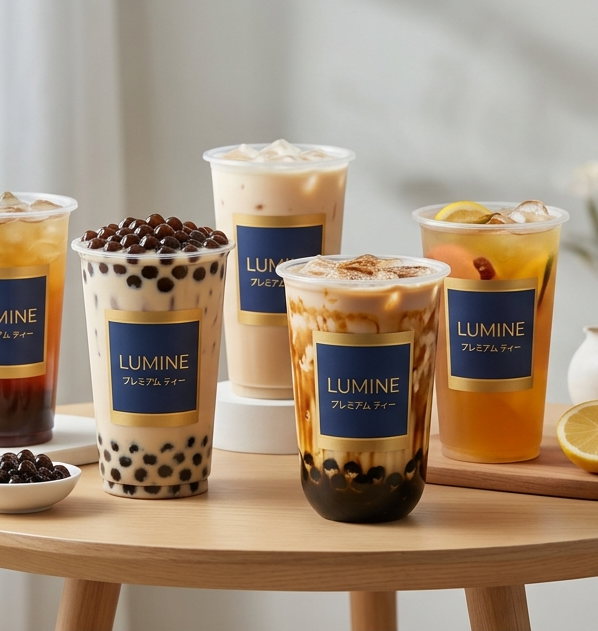

We're Here to Help!
What makes Lumine's tea special?
We combine premium, ethically sourced tea leaves with artisanal brewing techniques to ensure a refined, mindful experience in every sip.
Can I adjust my drink to my liking?
Absolutely! You have full control over your drink. Simply select your preferred sugar and ice levels directly through our menu.
How do I use my vouchers?
You can apply your available vouchers directly during the checkout process. Simply select your preferred discount from the voucher dropdown menu in your order summary.
Can I reorder my previous drinks?
Certainly! Visit your "Order History" page, select a past order, and click the "Reorder All" button to quickly add your previous selection back to your cart.
How do payments work?
We accept GCash, Credit/Debit cards, and Cash on Delivery (COD).
How can I leave feedback on my order?
We love your input! In your "Order History," you can rate each individual drink you’ve ordered from 1 to 5 stars. Your feedback helps us serve you better.